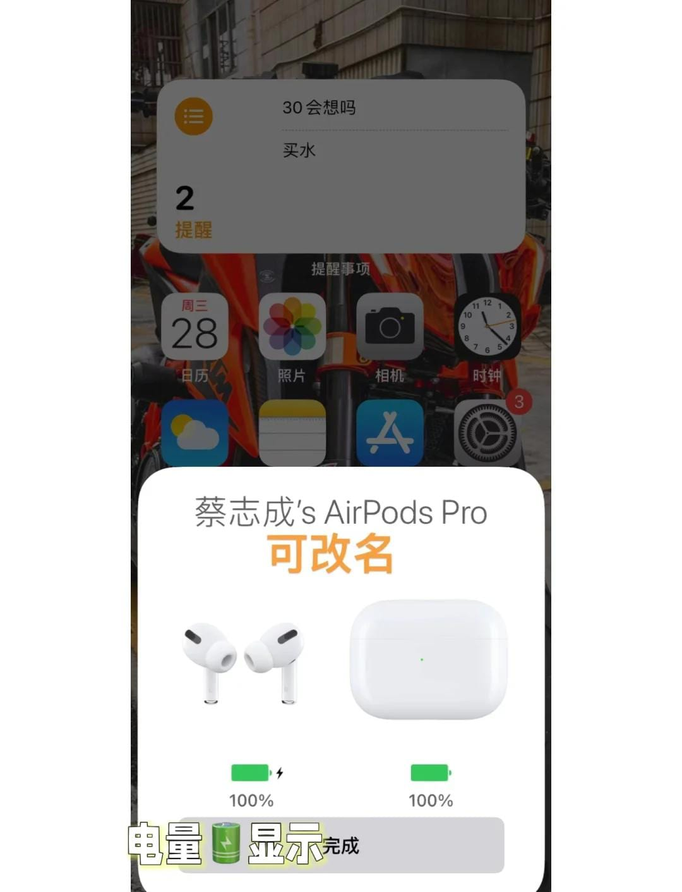

苹果 AirPods（初代）

真无线耳机开创者，即连即用的生态标杆
客观评测
初代 AirPods 搭载苹果 W1 芯片，蓝牙 4.0，单耳重 4g，内置光学传感器与加速度计，支持摘下自动暂停。单次续航约 5 小时，配合充电盒累计约 24 小时，充电 15 分钟可听 3 小时。声学上采用与 EarPods 相近的半入耳动圈，频响平直，低频量感一般，解析中规中矩；AAC 编解码在苹果设备上延迟良好，波束成形麦克风通话清晰。但无主动降噪、无防水，硬件参数在同价位并不突出。
主观点评
初代 AirPods 的体验可以用「忘了它存在」形容：开盖弹窗配对，戴上即听，取下即停，多设备切换顺滑得让人回不去有线。4g 的重量加上半入耳设计，佩戴无感，久戴不胀痛，跑步也不易掉。声音谈不上惊艳，低频偏少、声场窄，但在地铁里它更像一副无线耳塞而非听音工具。2016 年它以「剪线」的方式重新定义了耳机形态，此后真无线品类的一切故事都从这里开始。
优点与不足
- 开盖弹窗即连，苹果设备间无缝切换
- 单耳仅 4g，佩戴几乎无感
- 配合充电盒约 24 小时续航，便携可靠
- 半入耳隔音差，低频量感偏少
- 音质平平，无降噪、无防水等级
参数规格
| 类型 | 真无线半入耳 |
|---|---|
| 单元 | 苹果 W1 芯片驱动动圈 |
| 蓝牙 | 蓝牙 4.0 + W1 芯片 |
| 降噪 | 无主动降噪 |
| 续航 | 单次约 5 小时，配合充电盒约 24 小时 |
| 充电 | Lightning 充电盒（15 分钟充 3 小时） |
| 重量 | 单耳 4g，充电盒 38g |
| 传感器 | 光学传感器 + 加速度计 |
| 麦克风 | 波束成形麦克风 |
| 防护 | 无防水等级 |